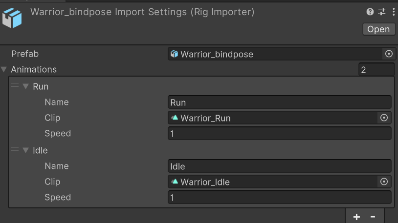

Hello Animatron
This tutorial will guide you through the process of creating an animated object from a prefab using Animatron.
1. Select a Prefab
Start by selecting the prefab you want to create a rig from.
Typically, this will be an imported model asset such as .fbx, .gltf, or .glb.
2. Create a Rig Asset
With the asset selected in the Project view, right-click and choose:
Create > Rig
This will generate a new asset with the .rig extension.
Note
Note: The .rig file is a dummy asset. The actual data is handled by the RigImporter, a ScriptedImporter that generates the underlying Rig ScriptableObject.
3. Assign the Prefab
Select the newly created .rig asset and assign your original prefab to the Prefab field.
Once assigned, a Rig ScriptableObject will be generated automatically.
4. Add Animations
In the Inspector, you’ll see an array labeled Animations.
Here you can assign the animation clips you want baked into the rig.
Note
Note: The assigned animations must share the same joint structure as the prefab. Mismatches can lead to undefined results.
After adding the animations, make sure to click the Apply button to save your changes.
5. Drag Into the Scene
Just like any prefab, you can now drag and drop the .rig asset into the Scene view to create an instance.